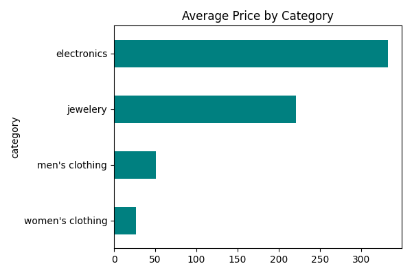
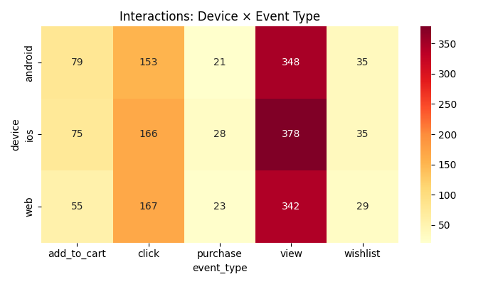
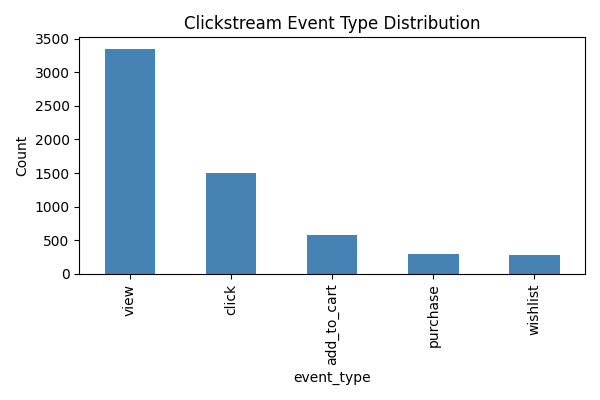
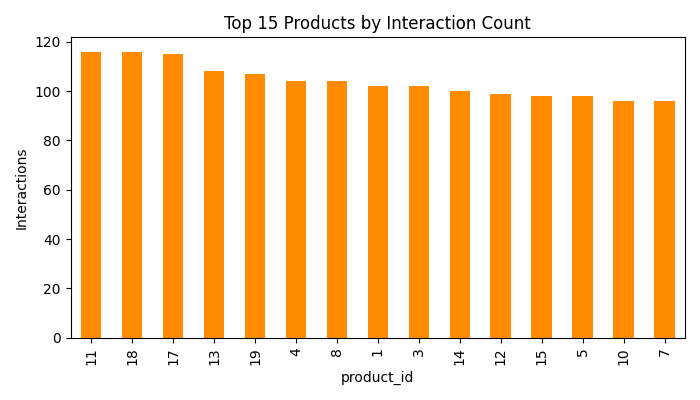
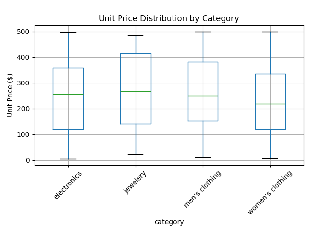
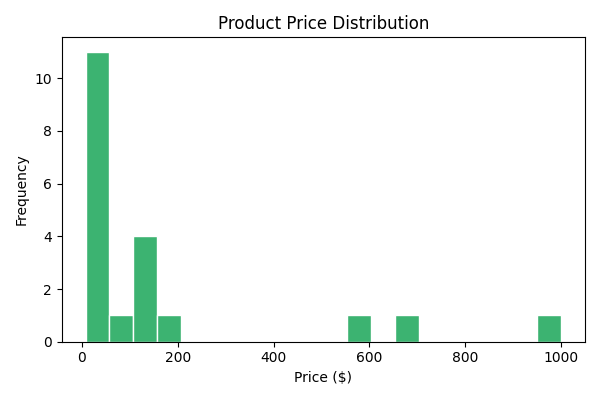
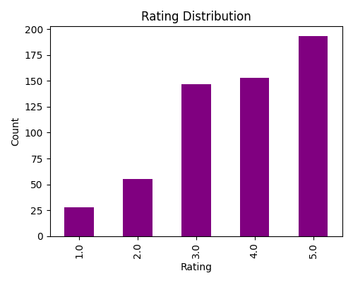
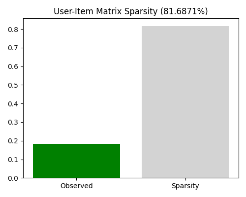
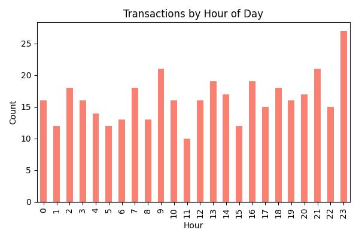
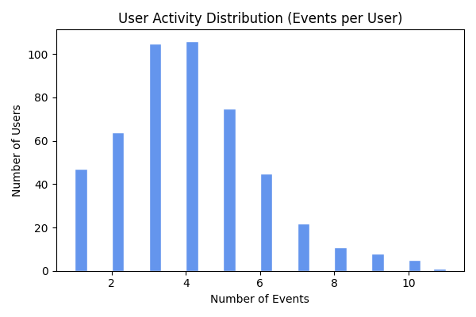

End-to-End Data Management Pipeline for a Recommendation System
RecoMart Data Platform Team
Name
Roll No / ID
DARSHAN LS
2025AA05828
SARDESAI SHRISHTI SANJAY
2025AA05830
SUNIL GUPTA
2025AA05833
ANEESH MURALI
2025AA05834
MARISETTI SANTHOSH
2025AA05836
1. Problem Statement
RecoMart, an e-commerce startup, wants to build a data-driven recommendation engine to improve customer engagement and cross-selling conversion. User behavior is captured across multiple heterogeneous sources -- web/mobile clickstream logs, transactional purchase history, product catalog metadata, and external sentiment/popularity signals -- and must be continuously ingested, validated, curated into features, and used to train/update a personalized recommendation model.
2. Objectives
Ingest at least two heterogeneous data types (CSV-based interaction logs, REST API product catalog) on an automated, retryable schedule.
Store raw data in a partitioned local data lake (source / type / date).
Profile and validate data quality (missing values, duplicates, schema, range checks) with an automated report.
Clean, encode, and normalize data; conduct EDA on interaction distributions, item popularity, and sparsity.
Engineer recommendation-ready features (activity frequency, average ratings, item co-occurrence) into a structured warehouse.
Stand up a lightweight, versioned feature store serving both training and inference.
Version raw/processed data and track transformation lineage.
Train and evaluate both collaborative-filtering (SVD) and content-based (cosine similarity) recommendation models (Precision@K, Recall@K, NDCG@K), tracked via MLflow.
Orchestrate the full pipeline end-to-end with automated retries and logging.
3. Methodology / Pipeline
The pipeline is implemented as 6 modular stages, each independently runnable and orchestrated end-to-end with Prefect: Ingestion -> Raw Storage -> Validation -> Preparation (Cleaning + EDA) -> Transformation (Feature Engineering into SQLite warehouse) -> Feature Store retrieval -> Model Training & Evaluation (MLflow).
Data sources: (a) clickstream events and (b) transaction/purchase records are simulated per run to mimic a live Kafka/OLTP source system; (c) product catalog is fetched live from the FakeStore REST API (https://fakestoreapi.com/products); (d) product sentiment/popularity scores are retrieved via a retry-capable scoring-service client (simulated locally, same integration pattern as a real API).
Modeling: src/models/train_model.py - (1) Truncated SVD collaborative filtering over a weighted implicit+explicit interaction matrix, (2) content-based filtering via item-feature cosine similarity; src/models/inference.py - top-N recommendation interface supporting both model types.
Orchestration: src/orchestration/pipeline_flow.py - Prefect @flow/@task DAG with retries and structured logging.
Versioning: docs/VERSIONING.md - Git + DVC workflow for data/model lineage.
5. Results and Output
Warehouse table row counts (latest pipeline run)
Table
Row Count
dim_users
494
dim_items
20
fact_interactions
1934
fact_transactions
391
item_cooccurrence
190
Model evaluation metrics (MLflow-tracked, latest run per model)
svd_collaborative_filtering
Metric
Value
explained_variance_ratio
0.9738
ndcg_at_k
0.3391
precision_at_k
0.0753
recall_at_k
0.6103
content_based_filtering
Metric
Value
ndcg_at_k
0.2644
precision_at_k
0.0703
recall_at_k
0.5568
Data quality validation summary
Dataset
Status
Rows
Issues
clickstream
WARN
2040
3
transactions
WARN
408
5
products
OK
20
0
sentiment
OK
20
0
EDA Summary Plots (all generated plots)
Avg Price By Category

Device Event Heatmap

Event Type Distribution

Item Popularity

Price By Category Boxplot

Price Distribution

Rating Distribution

Sparsity

Transactions By Hour

User Activity Distribution

Other generated artifacts: reports/Data_Quality_Report.pdf, warehouse/recomart.db, data/features/*.csv, and mlruns/ for MLflow tracking.
6. Conclusion and Future Scope
This POC demonstrates a fully modular, end-to-end data management pipeline covering ingestion, validation, preparation, feature engineering, a versioned feature store, model training/evaluation, and orchestration -- aligned with modern data-stack and MLOps practices. Both the SVD collaborative-filtering model and the content-based cosine-similarity model achieve measurable Precision@10 / Recall@10 / NDCG@10 on held-out interactions, and the pipeline is fully re-runnable end-to-end via a single Prefect flow.
Replace simulated clickstream/transaction sources with a real Kafka topic / OLTP CDC feed.
Extend content-based filtering with product text embeddings (title/description) and hybrid blending with the collaborative model.
Migrate raw storage to a real cloud data lake (S3/ADLS) with lifecycle policies.
Adopt Feast for a production-grade online feature store with a low-latency serving layer.
Schedule the Prefect flow on a deployment/work-pool for true periodic automation with alerting on failures.
A/B test the recommendation model in a live RecoMart storefront and track online CTR/conversion uplift.